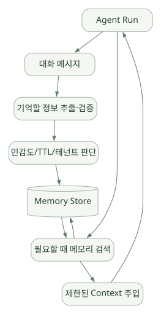

확장과 운영 / 단원 06
기억과 지식, 절차의 경계 나누기
History·Compaction·Memory·RAG와 별도 Harness
먼저 연결해 보기
현재 대화 기록, 입력 길이를 줄이는 Compaction, 여러 대화에 걸친 Memory와 외부 문서 RAG는 같은 기능이 아닙니다. Core의 메시지 제어와 Harness의 기억·검색·압축 기능도 범위를 나누어야 합니다.
Skills는 절차와 참고자료를 필요할 때 제공하며, MCP는 외부 도구를 연결합니다. 이 연결만으로 새 권한이나 검증된 지식이 자동으로 생기지는 않습니다. 민감정보와 정확한 수치는 원본·출처·보존 정책을 함께 설계하세요.
읽는 관점어디서 무엇을 저장·선택·주입하는지, 어떤 기능이 추가 패키지와 정책을 필요로 하는지 확인하세요.
14. Memory와 Context 관리#
14.1 반드시 구분해야 할 5개#
| 개념 | 저장/관리 대상 | PydanticAI의 위치 |
|---|---|---|
| Message History | 현재/과거 대화의 메시지 | Core의 모델 메시지 및 이력 API |
| Context Window | 모델에 실제 전송되는 토큰 구성 | Runtime + 프롬프트/History 처리 + 모델 제약 |
| Compaction | 오래된 Context를 요약·삭제/압축 | Core/별도 Harness Capability 등 |
| Long-term Memory | 여러 세션에 걸쳐 보존할 정보 | PydanticAI Harness Memory 또는 별도 저장소 |
| RAG Knowledge | 기술 문서, SOP, 공정 지식의 검색 | Tool·MCP·외부 검색 시스템으로 구현 |
RAG는 지식을 찾는 시스템이고, Memory는 어떤 사실을 어떤 기준으로 기억·갱신할지 관리하는 체계다. 같은 벡터 검색을 활용할 수 있어도 역할은 다르다.
14.2 Core와 Harness의 차이#
- Core: 대화 메시지 유지·재사용, 모델에 넘길 History 제어, Capability 기반 조절 등.
- Harness:
Memory,ConversationSearch,Compaction,ToolOutputLimits등을 제공한다. [S04][S19][S20] - Memory는 파일·PostgreSQL 등 저장소 구현을 선택할 수 있으며, 자동으로 무한히 무엇이든 영구 기억하는 것이 아니라 기능 활성화와 정책 설계가 필요하다.
- Conversation Search는 저장된 대화에 대한 검색 기능이고, Memory의 노트북형 영구 기억과는 다른 기능이다.
14.3 전형적인 Long-term Memory 아키텍처 [설계 예]#
넓은 도식은 가로로 이동하며 읽을 수 있습니다. 도식 크게 보기 ↗

원문에 수록된 학습용 도식입니다. 노드·화살표·분기 라벨을 보존해 다시 배치했습니다. 세부 조건과 예시·구현의 구분은 앞뒤 본문을 함께 읽으세요.
도식 원문 보기 (Mermaid)
flowchart LR
RUN[Agent Run] --> H[대화 메시지]
H --> EXTRA[기억할 정보 추출·검증]
EXTRA --> POLICY[민감도/TTL/테넌트 판단]
POLICY --> STORE[(Memory Store)]
RUN --> SEARCH[필요할 때 메모리 검색]
SEARCH --> STORE
STORE --> SEARCH --> CONTEXT[제한된 Context 주입]
CONTEXT --> RUN이 도식은 실제 Harness 내부 구현을 1:1 묘사한 것이 아니라 기업용 설계 원칙을 설명한다. 장기 기억은 기록 대상·검색·삭제·출처·충돌 해결·정보 보존 정책에 따라 별도로 설계되어야 한다. 공정 기밀/개인정보/고객사 데이터는 기억 저장 대상에서 기본 제외하는 편이 안전하다.
14.4 Context Compaction은 무슨 역할인가?#
긴 Agent 실행에서는 메시지 이력이 커져 비용·지연이 증가하고 모델 컨텍스트 제한에 도달한다. 공식 Harness는 다음과 같은 방식을 제공한다. [S20]
- Sliding Window: 오래된 기록을 제거하고 최근 맥락만 유지.
- Summarization: 오래된 기록을 모델 요약으로 대체.
- Tool Result Clearing: 지나치게 큰 Tool 결과를 치우거나 제한.
- Provider-native Compaction: 해당 모델 공급자의 서버측 기능 활용(지원 모델 한정).
주의: 요약은 추정·누락을 일으킬 수 있다. 공정 수율 수치·LOT ID·고장코드처럼 정확한 식별자가 필요한 데이터는 요약본만 신뢰하지 말고 원본 데이터와 참조 링크를 유지하는 방식이 적절하다.
15. Skills, MCP, RAG, 외부 시스템 연동#
15.1 Skills#
PydanticAI Harness의 Skills는 Agent Skill 패키지(SKILL.md)를 읽어 해당 작업 절차를 필요할 때 모델에 제공하는 기능이다. 최근 공식 문서는 디렉터리 스캔 → 유효한 Skill을 등록 → 모델이 load_capability로 선택적으로 로딩하는 방식을 설명한다. [S21]
.agents/skills/
lot-analysis/
SKILL.md
references/
metric_dictionary.md
equipment-diagnostics/
SKILL.md예시 SKILL.md:
---
name: lot-analysis
description: LOT 수율 지표를 보고할 때 참조하는 절차
---
LOT ID를 확인하고, 읽기 전용 조회 도구만 사용한 다음,
사용한 데이터 시점·필터·산식·근거를 보고서에 명시한다.Skill은 지식·절차의 패키지이며, 그 자체로 Agent의 모델 가중치를 학습시키는 기능은 아니다. Skill 파일 안에 임의 명령이 포함될 수 있으므로 신뢰하는 출처에서만 가져와 검토한다. [S21]
15.2 MCP 연결#
PydanticAI는 MCP Client/Server 및 별도 MCP Capability·Toolset 구성 방식을 제공한다. [S22]
PydanticAI Agent (MCP Client)
└── 사내 MCP 서버
├── read_lot_summary
├── find_equipment_alarm
└── search_process_sop- MCP 서버: Tool·리소스 등을 표준 인터페이스로 노출.
- MCP 클라이언트: Agent가 서버를 연결하여 도구를 발견·호출.
- 업무 데이터 권한: MCP를 쓴다고 자동으로 안전해지지 않는다. 권한·네트워크·로그 보안은 별도 설계.
15.3 RAG와 Memory는 어떻게 다른가?#
반도체 전문 문서 RAG를 만든다고 가정할 때:
- 공식 SOP·공정 지침을 청크로 분할하여 검색 인덱스 구성.
- 사용자 질문에 맞는 문서를 검색.
- 검색 결과를 Tool Return으로 반환.
- Agent가 참조 근거와 함께 답변.
- 최종 답변에 문서 버전, 문단 ID 등 검증 가능한 출처를 포함.
PydanticAI가 자동으로 사용자의 사내 문서 전체를 수집·임베딩·평가해 주는 것은 아니다. RAG 검색 파이프라인은 외부 컴포넌트·코드로 구성한다. 공식 RAG 예제가 출발점이 될 수 있다. [S23]